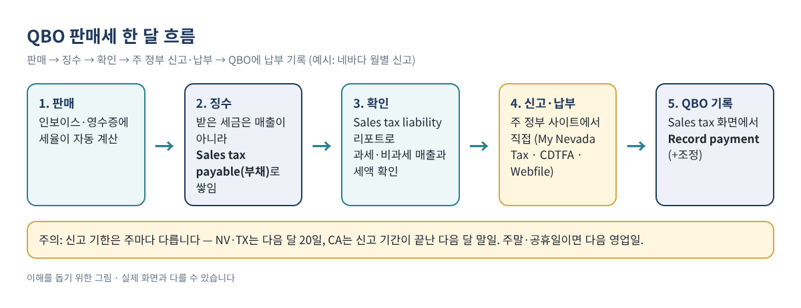
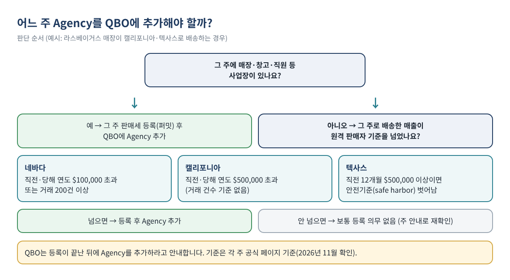
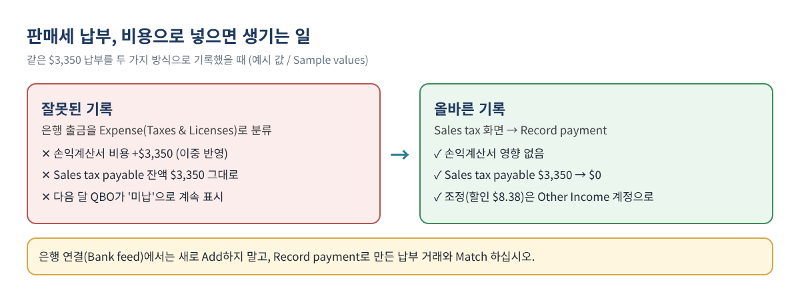
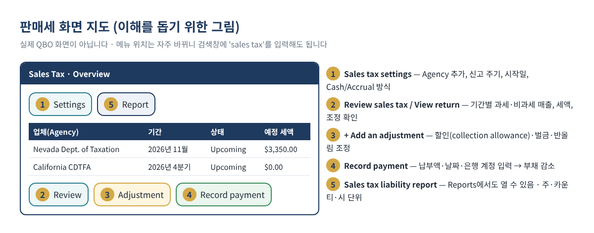

받은 판매세가 매출로 잡히고 있다면: QBO 판매세 설정과 신고 준비, 네바다·캘리포니아·텍사스 비교
손님에게 받은 판매세(Sales tax)는 사업체의 돈이 아닙니다. 주 정부를 대신해 잠시 맡아 두었다가 정해진 날까지 넘겨야 하는 돈입니다. 그런데 QuickBooks Online(QBO)에서 판매세를 제대로 세팅하지 않으면 세금이 매출에 섞여 들어가거나, 주 정부에 낸 납부액이 "비용"으로 한 번 더 잡히거나, 신고서 숫자와 장부 숫자가 맞지 않는 일이 자주 생깁니다.
이 글은 QBO의 판매세 기능을 처음부터 세팅하고, 매달(또는 분기마다) 신고 전에 숫자를 확인한 뒤, 주 정부 사이트에서 신고·납부한 내용을 QBO에 기록하는 과정을 단계별로 정리합니다. 한인 사업체가 많은 네바다·캘리포니아·텍사스의 세율, 신고 주기, 기한, 할인 제도를 각 주 공식 안내를 기준으로 나란히 비교했습니다. 시리즈 첫 글 QuickBooks Online 기초 가이드에서 짧게 소개한 내용을 자세히 풀어 쓴 글입니다.
이 글은 교육용 일반 정보이며 세무·법률·재무 자문이 아닙니다.
이런 분께 필요합니다 ☐ 인보이스에 세금이 붙긴 하는데 QBO에서 어디로 쌓이는지 모르는 분 ☐ 주 정부에 낸 판매세를 은행 연결 화면에서 "Taxes" 비용으로 분류해 온 분 ☐ 신고서의 과세 매출과 QBO 매출이 맞지 않는 분 ☐ 네바다 매장에서 캘리포니아·텍사스 고객에게도 배송하기 시작한 분 ☐ 네바다 신고 기한이 바뀌었다는 이야기를 들었는데 정확히 모르는 분
1. 먼저 원리: 판매세는 "매출"이 아니라 "맡아 둔 돈(부채)"입니다
$100짜리 물건을 팔면서 세금 $8.38을 함께 받았다면, 사업체의 매출은 $100이고 $8.38은 주 정부에 넘길 부채입니다. QBO의 판매세 기능을 켜면 세금 부분은 자동으로 Sales tax payable(판매세 미지급금) 성격의 부채 계정에 쌓이고, 매출 계정에는 세전 금액만 들어갑니다. 이후 주 정부에 납부하면 이 부채가 줄어듭니다. 이 흐름 어디에도 "비용"은 등장하지 않습니다.

Intuit 도움말은 판매세를 다음 순서로 설명합니다. ① 세금이 어떻게 계산되는지 이해하고 ② 세금을 걷는 곳(Agency)을 QBO에 알려 주고 ③ 상품·서비스에 판매세 카테고리를 지정하고 ④ 고객 정보(면세 여부)를 확인하고 ⑤ 판매 거래에서 세금을 추적하고 ⑥ 낼 세금을 확인한 뒤 ⑦ 신고합니다. 아래 단계도 이 순서를 따릅니다.
2. 세팅 전에 확인할 것: 어느 주에 등록해야 하나
QBO는 주 정부 등록이 끝난 뒤에 Agency를 추가하라고 안내합니다. 즉 QBO 설정보다 판매세 퍼밋(Seller's permit) 등록이 먼저입니다. 매장·창고·직원 등 사업장이 있는 주는 당연히 등록 대상이고, 사업장이 없는 주라도 그 주로 배송한 매출이 "원격 판매자(Remote seller)" 기준을 넘으면 등록 대상이 될 수 있습니다.

| 구분 | 네바다 | 캘리포니아 | 텍사스 |
|---|---|---|---|
| 담당 기관 | Nevada Department of Taxation | CDTFA (California Department of Tax and Fee Administration) | Texas Comptroller of Public Accounts |
| 원격 판매자 기준 | 직전 또는 당해 연도에 네바다로 배송한 소매 판매 $100,000 초과, 또는 200건 이상 | 직전 또는 당해 연도에 캘리포니아로 배송한 유형 재화 판매 $500,000 초과 (거래 건수 기준 없음) | 직전 12개월 텍사스 매출이 $500,000 미만이면 등록·징수 의무 없음(safe harbor) |
| 퍼밋 등록 참고 | 매장 위치마다 $15 (세무국 납세자 안내 자료) | CDTFA 온라인 등록 제공 | Comptroller 등록 후 신고 주기를 서면으로 통지 |
팁 원격 판매자 기준은 "그 주로 배송한 매출"을 기준으로 합니다. 네바다 매장에서 직접 팔고 손님이 들고 간 매출은 보통 네바다 매출입니다. 다른 주로 배송하는 매출이 늘고 있다면 배송 주별 매출 합계와 건수를 매달 따로 기록해 두면 판단이 쉬워집니다. 정확한 판단은 각 주 안내를 직접 확인하십시오.
3. 세 주 나란히 보기: 세율·신고 주기·기한·할인
아래 표는 각 주 공식 페이지를 2026년 11월에 열어 확인한 내용입니다. 확인하지 못한 항목은 비워 두지 않고 "확인 필요"로 표시했습니다. 세율과 기한은 바뀔 수 있으니 신고 전에 꼭 다시 확인하십시오.
| 항목 | 네바다 (NV) | 캘리포니아 (CA) | 텍사스 (TX) |
|---|---|---|---|
| 기본 세율 | 최저 주 전체 세율 6.85% | 주 전체 기본 세율 7.25% | 주 세율 6.25% |
| 지역 세율 | 카운티별 추가. 예: Clark 8.375%, Washoe 8.265% | District tax 0.10%~2.00%가 지역에 따라 추가 (2026년 10월 1일자 세율표 게시) | 지역세 최대 2%, 합계 최대 8.25% |
| 신고 주기 | 월 과세 매출 $10,000 초과면 월별, 그 미만이면 분기별, 전년 매출 $1,500 미만이면 연간 | CDTFA가 지정: 분기별, 분기 선납(prepay), 월별, 회계연도별, 연간 | Comptroller가 지정: 월별, 분기별, 연간 |
| 신고·납부 기한 | 기간이 끝난 다음 달 20일 (2026년 1월 공지로 변경, 이전에는 많은 사업체가 말일) | 기간이 끝난 다음 달 말일 (분기: 4/30, 7/31, 10/31, 1/31) | 다음 달 20일 (분기: 4/20, 7/20, 10/20, 1/20, 연간: 1/20) |
| 주말·공휴일 | 다음 영업일 | 다음 영업일 | 다음 영업일 |
| 기한 내 신고 혜택 | 판매세에 대해 0.25% Collection allowance | 확인한 CDTFA 페이지에 할인 안내 없음 (확인 필요) | 0.5% 기한 내 신고 할인, 선납 시 1.25% 추가 |
| 매출이 없을 때 | 매출이 없어도 기간마다 신고서 제출 | 매출이 없어도 기한까지 신고 (납부액 0이면 0원 납부는 불필요) | 확인한 페이지에 명시 없음 (확인 필요) |
| 늦었을 때 | 지연 일수에 따라 2%~10% 벌금, 월 0.75% 이자 | 확인 필요 | 늦은 신고 1건당 $50, 1~30일 지연 5%, 30일 초과 10%, 기한 61일 후부터 이자 |
| 재판매 증명서 | 세무국 양식 확인 필요 | CDTFA-230 (General Resale Certificate) | Form 01-339 |
| 온라인 신고 | My Nevada Tax | CDTFA 온라인 서비스 | Webfile (무료 전자 신고) |
네바다 사업자 주의 네바다 세무국은 2026년 1월 23일 공지에서 판매·사용세 신고 기한을 "다음 달 마지막 날"에서 "다음 달 20일"로 앞당긴다고 발표했습니다(AB 594). 예전 습관대로 말일에 신고하면 늦은 신고가 됩니다. 또 세무국 홈페이지는 2026년 12월 7일부터 세금 관련 서류와 납부의 전자 제출이 의무화된다고 안내하고 있으니, 종이 신고를 해 오셨다면 My Nevada Tax 계정을 미리 준비하십시오.
텍사스는 지역세를 정할 때 일반적으로 판매자의 사업장 위치를 기준으로 합니다(주 안 판매자 기준, 예외 있음). 캘리포니아는 District tax 지역에서 영업하는 판매자라면 그 지역으로 배달되는 과세 판매에 해당 District 세율을 적용해야 합니다. 네바다는 카운티별 세율표를 확인해 맞는 세율을 적용합니다. QBO 자동 판매세(Automated sales tax)는 판매 위치와 배송 주소를 바탕으로 세율을 계산하므로, 아래 4단계의 주소 입력이 정확해야 합니다.
4. QBO에서 판매세 세팅하기 (단계별)
최근 QBO 화면에서는 왼쪽 메뉴 All apps(모든 앱) → Sales Tax(판매세) 아래에 Overview와 Sales tax settings가 있습니다. 메뉴 위치가 자주 바뀌므로 찾기 어렵다면 상단 검색창에 "sales tax"를 입력하십시오. 판매세 기능은 Simple Start, Essentials, Plus, Advanced 등 대부분 요금제에서 쓸 수 있으며, 수동 판매세 기능은 Free·Lite 요금제에서 제한된다고 Intuit은 안내합니다.
1단계. 자동 판매세 시작과 사업장 주소 확인
- All apps → Sales Tax → Overview로 갑니다. 처음이라면 Use automatic sales tax를 선택합니다.
- 회사 이름과 주소를 확인하고 Next를 누릅니다. 이 주소가 다음 인보이스·Sales receipt의 기본 "판매 위치"가 되므로 매장 주소가 정확해야 합니다.
- 본사 주 밖에서도 판매세를 걷는지 묻는 질문에 답합니다. 등록한 다른 주가 있다면 Yes를 선택하고 해당 Agency를 고릅니다.
2단계. Agency별 신고 주기·시작일·방식 지정
- Agency마다 주 정부가 통지한 신고 주기(월별·분기별·연간)를 선택합니다. 퍼밋 등록 서류나 주 정부 통지서의 주기와 반드시 같게 맞춥니다.
- 나중에 Agency를 추가할 때는 Sales tax settings → Add agency에서 Agency, 신고 주기, 시작일, 신고 방식(Cash 또는 Accrual)을 입력하고 저장합니다.
- 시작일은 퍼밋의 효력 시작일에 맞춥니다. 시작일이 틀리면 이전 기간 매출까지 신고 대상으로 잡히거나 빠질 수 있습니다.
| 설정 항목 | 예시 값 / Sample values | 확인할 서류 |
|---|---|---|
| Agency | Nevada Department of Taxation | 퍼밋 등록 확인서 |
| 신고 주기 | Monthly (월 과세 매출 $10,000 초과 가정) | 세무국 통지 / My Nevada Tax 계정 |
| 시작일 | 2026-01-01 | 퍼밋 효력 시작일 |
| 신고 방식 | Accrual | 주 정부 신고 기준과 회계사 안내 |
| 추가 Agency | California CDTFA (Quarterly), 원격 판매 기준 초과 가정 | CDTFA 등록 확인서 |
3단계. 상품·서비스에 판매세 카테고리 지정
자동 판매세는 고객의 면세 여부, 판매 또는 배송 위치, 그리고 상품·서비스의 판매세 카테고리를 함께 보고 세율을 정합니다. Products and services 목록에서 각 품목을 열어 카테고리를 지정하십시오. 같은 "서비스"라도 주마다 과세 여부가 다를 수 있으므로, 애매한 품목은 주 안내를 확인한 뒤 지정합니다. 품목 목록을 엑셀로 정리해 두었다면 고객·거래처·상품 목록 가져오기 글의 방법으로 한 번에 정리할 수 있습니다.
4단계. 면세 고객 표시
재판매용으로 사 가는 도매 고객이나 면세 단체는 고객 정보에서 면세로 표시합니다. 수동 판매세 화면 기준으로는 고객 편집 → Additional info에 This customer is tax exempt 체크 상자가 있습니다. 화면 이름은 요금제와 화면 버전에 따라 다를 수 있습니다. QBO에 면세로 표시하는 것과 별개로, 캘리포니아는 CDTFA-230, 텍사스는 Form 01-339 같은 재판매 증명서를 받아 보관해야 합니다. 증명서 없이 면세 처리한 매출은 감사 때 문제가 될 수 있습니다.
5단계. 판매 거래에서 세금 확인
- 인보이스나 Sales receipt를 만들 때 Location of sale(판매 위치)이 맞는지 봅니다.
- 배송하는 경우 Shipping to(배송 주소)를 입력해야 QBO가 배송지 기준 세율을 계산할 수 있습니다.
- 과세 품목의 Tax 열 체크를 확인하고, 세금 합계나 See the math를 눌러 주·카운티·시 세율 분해를 확인합니다.
인보이스 처리 전반은 인보이스부터 입금까지 글을 참고하십시오.
5. 신고 전 확인: Sales tax liability 리포트 읽는 법
Reports에서 "Sales Tax Liability"를 검색하거나, Sales Tax Overview의 Related tasks에서 리포트를 엽니다. 기간과 Agency를 고른 뒤 실행하면 다음 열이 나옵니다.
- Gross total: 세금을 뺀 전체 매출(과세+비과세). Credit memo와 Refund receipt는 이 금액을 줄입니다.
- Non-taxable amount: 면세 고객, 세금 미선택, 비과세 품목·카테고리 때문에 세금이 붙지 않은 매출.
- Taxable amount: 세금이 붙은 매출.
- Tax amount: 실제로 부과된 세금.
주의할 점이 두 가지 있습니다. 첫째, 이 리포트에는 Bank deposit과 Journal entry가 포함되지 않습니다. 은행 입금 화면에서 매출을 바로 잡았다면 리포트의 매출이 실제보다 작게 나옵니다. 둘째, 주·카운티·시 줄의 매출 금액은 서로 더하면 안 되고(같은 매출이 각 단계에 중복 표시), 세액만 더할 수 있습니다. 숫자가 이상하면 Tax amount를 눌러 거래 상세를 확인하십시오.
6. 실제 예시: 라스베이거스 매장의 11월 신고
가상의 기프트샵 "샌드힐 기프트(예시)"는 Clark County에 매장이 하나 있고 네바다 월별 신고 대상이라고 가정합니다. 2026년 11월 QBO 리포트가 아래와 같다고 해 봅니다.
| 항목 (예시 값 / Sample values) | 금액 | 메모 |
|---|---|---|
| Gross total (세전 전체 매출) | $45,000.00 | 인보이스·Sales receipt 합계 |
| Non-taxable amount | $5,000.00 | 재판매 증명서를 받은 도매 판매 |
| Taxable amount | $40,000.00 | $45,000 − $5,000 |
| Tax amount (Clark County 8.375%) | $3,350.00 | $40,000 × 8.375% |
| Collection allowance (0.25%, 기한 내 신고 시) | −$8.38 | $3,350 × 0.25% = $8.375, 실제 계산 줄은 신고서 안내를 따름 |
| 실제 납부액 | $3,341.62 | My Nevada Tax에서 납부 |
기한: 11월분은 다음 달 20일이 기한인데, 2026년 12월 20일은 일요일이므로 다음 영업일인 12월 21일(월)까지 신고·납부하면 됩니다. 여유 있게 처리하는 습관을 권합니다.
QBO 기록 순서
- Sales Tax Overview에서 11월 기간의 Review sales tax(또는 View return)를 엽니다.
- + Add an adjustment로 −$8.38을 입력합니다. 계정은 미리 만들어 둔 "Sales Tax Discount" 같은 기타 수익(Other Income) 계정을 고릅니다. 판매세 부채 계정 자체는 고르지 않습니다.
- My Nevada Tax에서 실제로 신고·납부합니다. QBO는 일부 주에서만 별도 e-file 서비스를 제공하며, 보통은 주 정부 사이트에서 직접 신고합니다.
- QBO로 돌아와 Record payment에 납부액 $3,341.62, 납부일, 은행 계정을 입력하고 저장합니다.
- 며칠 뒤 은행 연결 화면에 같은 금액의 출금이 뜨면, 새로 Add하지 말고 방금 만든 납부 기록과 Match합니다. 은행 연결 작업은 QBO 은행 연결 완전 정리 글에 자세히 있습니다.


7. 자주 하는 실수
- 판매세 납부를 비용으로 분류: 은행 연결에서 주 정부 출금을 "Taxes & Licenses"로 Add하면 비용이 늘고, 부채는 그대로 남아 QBO가 계속 미납으로 표시합니다. 반드시 Record payment로 기록하고 Match하십시오. 이미 여러 건을 잘못 넣었다면 잘못 입력한 거래 고치기와 일괄 재분류 글을 참고하십시오.
- 매출을 은행 입금(Deposit)으로만 기록: 판매세 리포트에 잡히지 않아 신고 금액이 작아집니다. POS 매출이라면 일별 Sales receipt로 기록하는 방법을 고려하십시오.
- 세금 포함 금액을 그대로 매출로 입력: 세금을 따로 계산하지 않고 받은 총액을 매출로 넣으면 매출이 부풀고 부채가 빠집니다.
- 면세 처리 후 증명서 미보관: QBO 체크 상자만으로는 면세 근거가 되지 않습니다.
- 신고 주기·시작일 불일치: QBO의 주기가 주 정부 통지와 다르면 기간별 금액이 어긋납니다.
- 네바다 기한을 예전처럼 말일로 기억: 2026년부터는 다음 달 20일입니다.
- 판매세 부채 계정에 직접 분개: Journal entry로 부채 계정을 건드리면 판매세 화면의 잔액이 설명되지 않는 금액으로 바뀝니다. Intuit도 잔액이 이상하면 이 계정의 분개를 먼저 확인하라고 안내합니다.
8. 자주 묻는 질문 (FAQ)
Q1. QBO가 주 정부에 자동으로 신고해 주나요?
일반적으로는 아닙니다. QBO는 신고에 필요한 숫자를 정리해 주고, 실제 신고는 주 정부 사이트나 우편으로 합니다. Intuit은 일부 주에서 별도 e-file 서비스를 제공한다고 안내하므로, 사용 중인 화면에서 제공 여부를 확인하십시오.
Q2. 이미 신고한 기간을 고쳐야 하면 어떻게 하나요?
Intuit은 QBO에서 수정 신고(amended return)를 지원하지 않는다고 안내합니다. 주 정부에 직접 정정 방법을 확인하고, 이미 신고한 기간의 조정을 QBO에서 지우면 주 정부 기록과 어긋날 수 있으니 다음 신고에 반영하는 방법을 검토하십시오. 텍사스 Comptroller는 종이 수정 신고서 상단에 "Amended Return"이라고 적어 제출하는 방법을 안내합니다.
Q3. 텍사스의 0.5% 할인이나 네바다의 0.25%는 어떻게 기록하나요?
신고 검토 화면에서 조정(Adjustment)으로 음수 금액을 넣고, 기타 수익(Other Income) 계정을 지정합니다. 벌금·이자는 비용 계정으로 조정합니다. 계정은 미리 Chart of Accounts에 만들어 두십시오(기초 잔액과 Chart of Accounts 세팅 참고).
Q4. 매출이 하나도 없는 달에도 신고해야 하나요?
네바다와 캘리포니아는 공식 안내에서 매출이 없어도 신고서를 내야 한다고 밝히고 있습니다. 텍사스는 이 글에서 확인한 페이지에 명시가 없으므로 Comptroller 안내를 직접 확인하십시오.
Q5. 다른 주 고객에게 배송하면 그 주 세금을 반드시 걷어야 하나요?
그 주에 사업장이 없다면 보통 원격 판매자 기준(NV $100,000 또는 200건, CA $500,000, TX $500,000)을 넘었는지가 기준입니다. 넘었다면 그 주에 등록한 뒤 QBO에 Agency를 추가합니다. 기준과 측정 기간은 주마다 다르니 각 주 안내로 확인하십시오.
9. 셀프 체크리스트
- ☐ 판매세 퍼밋을 등록한 주와 QBO의 Agency 목록이 일치한다
- ☐ Agency별 신고 주기·시작일·Cash/Accrual 방식이 주 정부 통지와 같다
- ☐ 모든 상품·서비스에 판매세 카테고리가 지정되어 있다
- ☐ 면세 고객마다 재판매 증명서(CA: CDTFA-230, TX: 01-339 등)를 보관하고 있다
- ☐ 매출은 인보이스·Sales receipt로 기록하고, 은행 입금으로만 기록한 매출이 없다
- ☐ 신고 전에 Sales tax liability 리포트의 과세·비과세 매출을 확인했다
- ☐ 할인·벌금 조정은 Other Income·비용 계정으로 넣었다
- ☐ 납부는 Record payment로 기록하고 은행 출금과 Match했다
- ☐ 네바다는 다음 달 20일, 텍사스는 20일, 캘리포니아는 다음 달 말일 기한을 달력에 넣었다
10. 함께 보면 좋은 글
- QuickBooks Online 기초 가이드: 처음 시작할 때 꼭 알아야 할 10가지
- QBO 처음 시작하기: 기초 잔액과 Chart of Accounts 세팅
- 고객·거래처·상품 목록, 엑셀로 한 번에 가져오기
- QBO 은행 연결 완전 정리: Match, Add, Rule
- 인보이스부터 입금까지: 부분 결제·할인·환불·크레딧
- 잘못 입력한 거래 고치기: Void, Delete, Undo, Audit log
- Undeposited Funds 정리
- 거래 일괄 재분류와 Journal entry
이 글은 일반적인 교육용 정보이며 세무·법률·재무 자문이 아닙니다. 판매세 과세 여부, 등록 의무, 신고 주기는 사업 형태와 판매 방식에 따라 달라지므로 개별 판단은 자격을 갖춘 전문가 또는 각 주 세무 기관과 상의하십시오. QuickBooks Online의 화면, 메뉴 이름, 요금제별 기능과 가격, 각 주의 세율과 기한은 수시로 바뀌므로 실제 작업 전에 현재 화면과 Intuit 및 각 주 정부의 공식 안내를 확인하십시오. 예시의 업체와 금액은 모두 가상입니다.
QuickBooks is a registered trademark of Intuit Inc.; not affiliated with or endorsed by Intuit.
출처
- Intuit QuickBooks 도움말: Set up and use automated sales tax in QuickBooks Online
- Intuit QuickBooks 도움말: Set up where you collect sales tax
- Intuit QuickBooks 도움말: Set up your sales tax in QuickBooks Online
- Intuit QuickBooks 도움말: Use automated sales tax on an invoice or sales receipt
- Intuit QuickBooks 도움말: File your sales tax return and record sales tax payments
- Intuit QuickBooks 도움말: Create or delete a sales tax adjustment
- Intuit QuickBooks 도움말: Understand the sales tax liability report
- Intuit QuickBooks 도움말: Check how much sales tax you owe
- Intuit QuickBooks 도움말: Manage sales tax payments
- Intuit QuickBooks 도움말: Default customer sales tax rate
- Nevada Department of Taxation: Sales Tax & Use Tax
- Nevada Department of Taxation: Nevada Revises Sales and Use Tax Deadlines Under AB 594 (2026.1.23)
- Nevada Department of Taxation: Components of Sales and Use Tax Rates
- Nevada Department of Taxation: Remote Sellers
- Nevada Department of Taxation: Taxpayer Information Packet
- Nevada Department of Taxation 홈페이지 (전자 제출 의무 안내)
- CDTFA: California City & County Sales & Use Tax Rates
- CDTFA: Publication 51, Tax and Fee Rates and Filing Frequencies
- CDTFA: Managing Your Sales (New Permit and License Holders)
- CDTFA: Use Tax Collection Requirements (Wayfair) – General Information
- CDTFA: Know Your Sales and Use Tax Rate
- CDTFA: Local and District Tax Guide for Retailers
- CDTFA: Filing Dates for Sales and Use Tax Returns
- CDTFA-367-SUT: Quarterly Prepayment Due Dates
- Texas Comptroller: Sales and Use Tax
- Texas Comptroller: Sales Tax FAQ – Reporting and Paying
- Texas Comptroller: Due Dates for Taxes, Fees and Information Reports
- Texas Comptroller: Local Sales and Use Tax Collection (94-105)
- Texas Comptroller: Remote Sellers and Marketplace FAQ
- Texas Comptroller: Local Sales and Use Tax FAQ